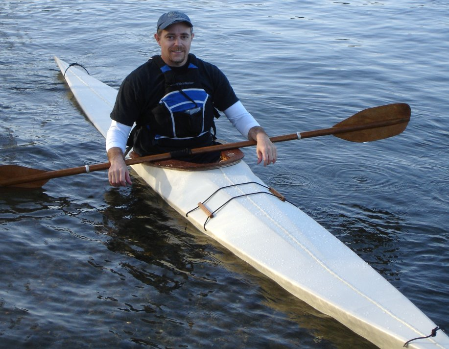

Sea Rover LC by Dave Gentry (US)
Menu
Previous Page
Next Page

Dave, from Bellingham, Washington, paddles his Sea Rover LC. He modified the dimensions to 16' X 17 7/8". The skin is nylon coated with tinted urethane.